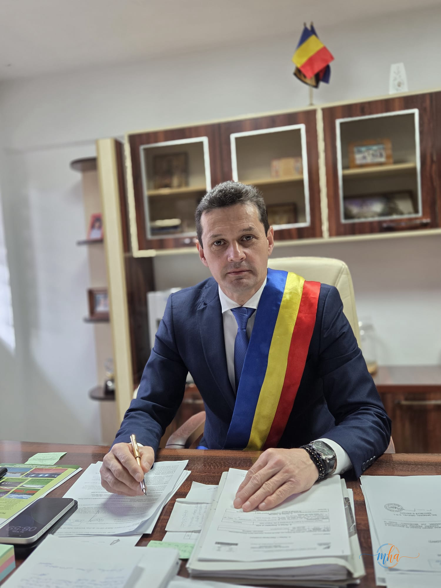
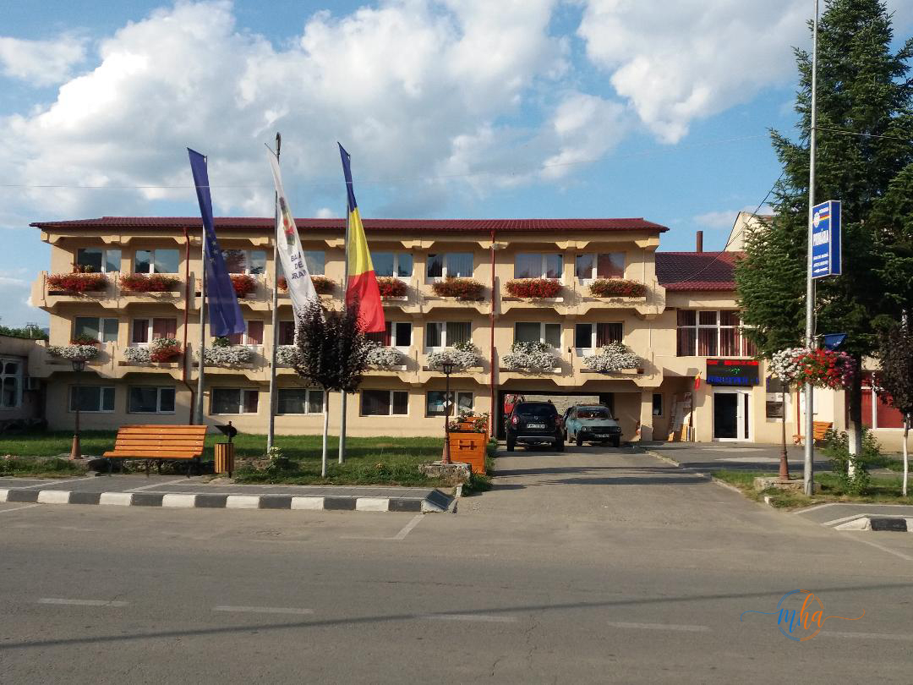

Nu este o imagine obișnuită pentru administrația românească: un primar în costum, cu ochelari de soare, la volanul unui camion MAN încărcat cu asfalt, deplasându-se spre șantierul de modernizare a unui drum din localitate. Și totuși, Ionuț Tudorescu, primarul orașului Baia de Aramă, a transformat această scenă în realitate pe 13 mai 2026.
📌 Lucrare — Modernizare drum Brebina, Baia de Aramă
| Localitate | Brebina, orașul Baia de Aramă |
| Lucrare | Modernizare și asfaltare drum |
| Primar implicat | Ionuț Tudorescu (PSD) |
| Vehicul condus | Camion MAN cu asfalt |
| Data | 13 Mai 2026 |
| Sursa foto | Pagina Facebook a primarului |
Un primar cu pasiune pentru camioane și muncă pe teren
Locuitorii din Baia de Aramă au avut parte, în această dimineață, de un spectacol administrativ mai puțin întâlnit: primarul orașului a lăsat, pentru câteva ore, ședințele, semnăturile și tradiționalele hârtii birocratice pentru a urca la volanul unui camion încărcat cu asfalt și a participa personal la lucrările de modernizare a drumurilor din localitatea Brebina.
Ionuț Tudorescu a postat un videoclip pe rețelele de socializare prin care informează cetățenii despre activitatea de astăzi: urcă în camion, îl conduce și se deplasează cu materialele necesare turnării asfaltului. Edilul s-a dovedit a fi multifuncțional — pe lângă administrarea orașului, social-democratul demonstrează că poate conduce și mașini de tonaj.

Ionuț Tudorescu, primarul orașului Baia de Aramă — de la birou direct pe șantier | Foto: arhivă
Ce spune primarul: „Munca pe teren m-a atras mereu"
„Puțini știu că, dincolo de administrație, am avut mereu o pasiune pentru camioane și pentru munca adevărată, făcută pe teren. Astăzi, am avut bucuria de a îmbina această pasiune cu responsabilitatea pe care o am față de comunitate, contribuind direct la lucrările care înseamnă drumuri mai bune și dezvoltare pentru localitatea noastră. Îmi place să fiu mereu aproape de oameni și implicat acolo unde se construiește ceva bun pentru viitor!"
Mesajul postat de primar pe pagina sa de Facebook a strâns rapid reacții pozitive din partea cetățenilor, care apreciază implicarea directă a edilului în proiectele de infrastructură ale orașului.
Administrație vizibilă — primarul pe teren, nu doar la birou
Gestul primarului Tudorescu ilustrează o abordare tot mai apreciată în administrația publică locală: implicarea directă a liderilor în proiectele comunității. Drumurile din Baia de Aramă și localitățile componente — printre care și Brebina — beneficiază de investiții continue în infrastructura rutieră, iar prezența personală a primarului la lucrări transmite un mesaj clar de seriozitate și angajament față de cetățeni.

Primăria orașului Baia de Aramă — instituție din care Ionuț Tudorescu conduce comunitatea | Foto: arhivă
Baia de Aramă — un oraș în continuă dezvoltare
Orașul Baia de Aramă, reședința comunei cu același nume din județul Mehedinți, se află în plin proces de modernizare a infrastructurii rutiere. Localitățile componente, inclusiv Brebina, beneficiază de lucrări de asfaltare și reabilitare a drumurilor, finanțate din fonduri locale și europene. Implicarea directă a primarului în derularea lucrărilor demonstrează că autoritatea locală urmărește îndeaproape calitatea și ritmul execuției.
Ionuț Tudorescu, ales primar al orașului Baia de Aramă din partea Partidului Social Democrat, este cunoscut în comunitate pentru stilul său direct și apropierea față de cetățeni. Activitățile pe teren, postările frecvente pe rețelele de socializare și transparența față de locuitorii orașului l-au transformat într-un edil apreciat de comunitate.